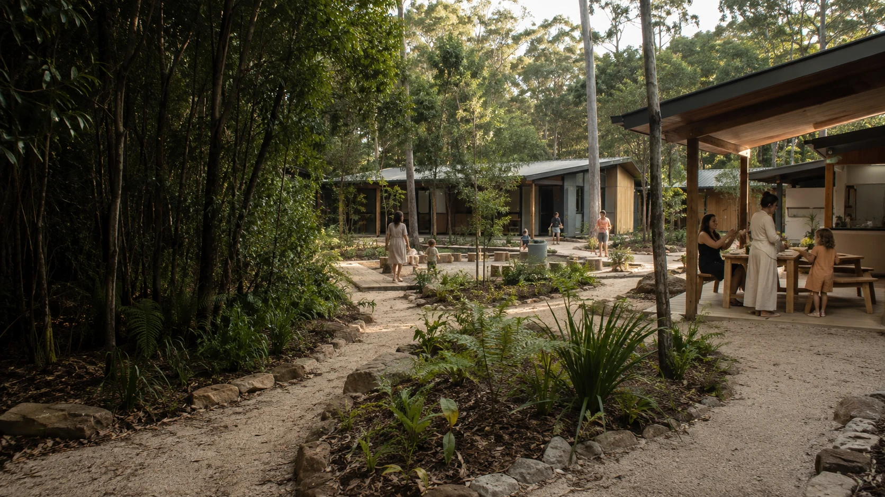

Which site offers privacy and practical access?
Quiet arrival, transport, comfortable living and spaces for children all affect the location.

A distinct island proposal to be shaped with relevant women around location, leadership, privacy, access and everyday support.
Quiet arrival, transport, comfortable living and spaces for children all affect the location.
Local women, Elders and suitable specialist services bring different knowledge and responsibilities.
Food, sleep, schooling, communication, health, legal help and family connection shape a stable stay.
Housing, income, family support and continuing services matter from the beginning.